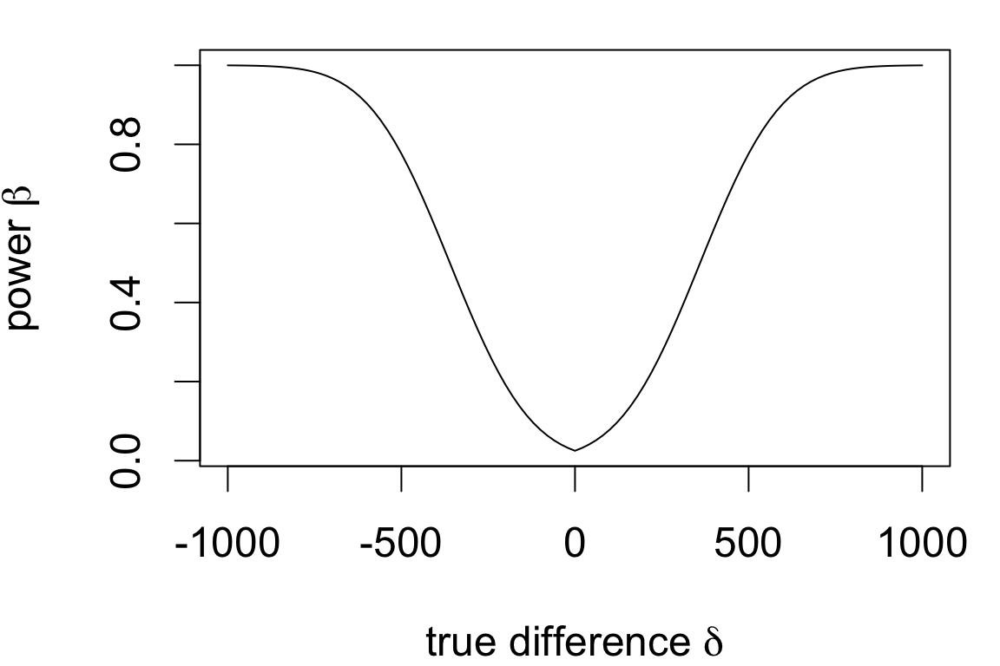

Welch Two Sample t-test
data: Rainfall by Treatment
t = 1.9982, df = 33.855, p-value = 0.05377
alternative hypothesis: true difference in means between group Seeded and group Unseeded is not equal to 0
95 percent confidence interval:
-4.764295 559.556603
sample estimates:
mean in group Seeded mean in group Unseeded
441.9846 164.5885 Power analyses
Post hoc power analyses and determination of sample sizes for study design
Today’s agenda
Reading quiz [2pm section] [4pm section]
Type II errors: review and further exploration
[lecture/lab] Power analysis
- Sample size calculations
- Post-hoc power analyses
A thought experiment
Suppose that for the cloud data you’d performed a two-sided test: \[H_0: \mu_\text{seeded} = \mu_\text{unseeded}\] \[H_A: \mu_\text{seeded} \neq \mu_\text{unseeded}\]
Almost below the significance threshold but not quite.
The data do not provide sufficient evidence to reject the null hypothesis that seeding has no effect relative to the alternative of an increase or decrease in mean rainfall due to seeding (T = 1.998 on 33.86 degrees of freedom, p = 0.05377).
The point estimate for the difference is 277.4 acre-feet.
- The test says this observed difference could plausibly be due to sampling variation
- But is it also plausible that our test result is wrong if the difference is real?
Type II error rates
Recall: a type II error is failing to reject a false null hypothesis.
In the context of two-sample inference a type II error occurs when:
- the true difference is \(\delta \neq 0\)
- we test and fail to reject \(H_0: \delta \neq 0\)
The type II error rate depends on both known and unknown factors:
- [unknown] magnitude of \(\delta\)
- [unknown] population variability \(\sigma\)
- [known] significance level
- [known] sample sizes
What was the type II error rate for the cloud seeding test?
Simulating type II errors
Summary stats for cloud data:
| Treatment | mean | sd | n |
|---|---|---|---|
| Seeded | 442 | 650.8 | 26 |
| Unseeded | 164.6 | 278.4 | 26 |
We can approximate the type II error rate by:
- simulating datasets with matching summary statistics
- performing two-sided tests of no difference
- computing the proportion of fail-to-reject decisions
type2sim(delta = 277, n = 26, sd = 650, alpha = 0.05)[1] 0.689\(\Rightarrow\) if the true difference were exactly as estimated, our test result would be incorrect nearly 70% of the time!
What would happen to the error rate if…
- the true difference
deltawere bigger? - the significance level
alphawere smaller? - the sample size
nwas larger? - the variability of rainfall
sdwere less?
Simulating type II errors
Open the lab and use the simulation function type2sim to fill in the table by changing arguments accordingly.
- try a few magnitudes of difference for each scenario
- repeat runs for each setting once or twice to confirm effect
| Factor | Change | Effect on error rate |
|---|---|---|
| true difference in means | larger | |
| true difference in means | smaller | |
| population variability | larger | |
| population variability | smaller | |
| sample size | larger | |
| sample size | smaller | |
| significance level | larger | |
| significance level | smaller |
Based on your explorations, do you think our original test decision was erroneous?
Statistical power
The power of a test refers to its true rejection rates across alternatives and is defined as: \[\beta(\delta) = \underbrace{(1 - \text{type II error rate}_\delta )}_\text{correct decision rate when null is false}\]
Power is often interpreted as a detection rate for a specified alternative \(\delta\):
- high type II error \(\longrightarrow\) low power \(\longrightarrow\) low detection rate
- low type II error \(\longrightarrow\) high power \(\longrightarrow\) high detection rate
In general tests have low power for alternatives close to the null value (where “close” is relative to sampling variability).
Theory allows a direct calculation of power, given sample size, significance level, population standard deviation, and population difference in means.
Power curves
Power is usually construed as a curve depending on the true difference.
Power curve for the test exactly as performed with the cloud seeding data:

All other attributes of the test are fixed to approximate the test performed:
- sample size \(n = 26\)
- significance level \(\alpha = 0.05\)
- population standard deviation \(\sigma = 650\) (larger of two group estimates)
Factors affecting power
Power depends on all the same factors as type II error rates
| Factor | Change | Effect on error rate | Effect on power |
|---|---|---|---|
| true difference in means | larger | ||
| true difference in means | smaller | ||
| population variability | larger | ||
| population variability | smaller | ||
| sample size | larger | ||
| sample size | smaller | ||
| significance level | larger | ||
| significance level | smaller |
Two common power analyses
Post hoc analysis: how much power does the test I conducted have if the true difference is exactly equal to my estimate?
Helps to interpret negative results:
- low power \(\rightarrow\) failure to reject was likely
- high power \(\rightarrow\) failure to reject was not likely
Don’t over-interpret post-hoc analyses
Failure to reject using a well-powered test does not confirm the null hypothesis.
Sample size determination: how much data do I need to collect to detect a difference of \(\delta\) using a particular test?
Helps avoid two potential issues:
- too little data \(\rightarrow\) study not likely to yield significant results
- too much data \(\rightarrow\) study is too likely to yield significant results
Post-hoc analysis
Can we estimate the power of a test we already performed?
Feasible if we assume (a) a population standard deviation and (b) test conditions are met.
For the cloud seeding test:
power.t.test(delta = 250, # magnitude of difference
sd = 650, # largest population SD
n = 26, # smallest sample size
sig.level = 0.05,
type = 'two.sample',
alternative = 'two.sided')
Two-sample t test power calculation
n = 26
delta = 250
sd = 650
sig.level = 0.05
power = 0.2743235
alternative = two.sided
NOTE: n is number in *each* groupFor a conservative estimate, use:
- smallest of the two sample sizes
- largest of the two standard deviations
- smaller difference than observed
\(\Longrightarrow\) our test would only reject in favor of a difference of the observed magnitude about 27% of the time
Failure to reject doesn’t strongly rule out the alternative.
Your turn: post-hoc analysis
Consider testing whether body temperature differs by sex.
Summary stats and test result:
| sex | mean | sd | n |
|---|---|---|---|
| female | 98.66 | 0.9929 | 19 |
| male | 98.17 | 0.7876 | 20 |
t.test(body.temp ~ sex, data = temps)
Welch Two Sample t-test
data: body.temp by sex
t = 1.7118, df = 34.329, p-value = 0.09595
alternative hypothesis: true difference in means between group female and group male is not equal to 0
95 percent confidence interval:
-0.09204497 1.07783444
sample estimates:
mean in group female mean in group male
98.65789 98.16500 Assume the true difference is actually 0.5 °F. Determine the power of the test above when:
- Population SD is the smaller of the two groups
- Population SD is the larger of the two groups
- A one-sided test is used instead
Based on your answers, do you think the negative test result rules out the alternative?
Power curve for body temps
Assuming we underestimated the population standard deviation a bit, the power curve for a one-sided test would look like this:

Assumptions:
- n = 19 per group
- \(\sigma = 1.2\) per group
- significance level \(\alpha = 0.05\)
- one-sided test
Fairly low power for alternatives near the estimated difference (dashed line), so failure to reject doesn’t strongly rule out the alternative.
The equal-variance \(t\)-test
If it is reasonable to assume the (population) standard deviations are the same in each group, one can gain a bit of power by using a different standard error:
\[SE_\text{pooled}(\bar{x} - \bar{y}) = \sqrt{\frac{\color{red}{s_p^2}}{n_x} + \frac{\color{red}{s_p^2}}{n_y}} \quad\text{where}\quad \color{red}{s_p} = \underbrace{\sqrt{\frac{(n_x - 1)s_x^2 + (n_y - 1)s_y^2}{n_x + n_y - 2}}}_{\text{weighted average of } s_x^2 \;\&\; s_y^2}\]
In the case of the body temperature data, \(s_p\) = 0.8934. Check:
- How much power do we gain if we assume a common SD of 0.89?
- Does it change the outcome of the test (add
var.equal = T)?
Produces minimal gains and inflates type I error if not warranted, so better avoided unless you have a small sample size
Sample size calculation
If you were (re)designing the study, how much data should you collect to detect a specified effect size?
To detect a difference of 250 or more due to cloud seeding with power 0.9:
power.t.test(power = 0.9, # target power level
delta = 250, # smallest difference
sd = 650, # largest population SD
sig.level = 0.05,
type = 'two.sample',
alternative = 'two.sided')
Two-sample t test power calculation
n = 143.0276
delta = 250
sd = 650
sig.level = 0.05
power = 0.9
alternative = two.sided
NOTE: n is number in *each* groupFor a conservative estimate, use:
- overestimate of the larger of the two standard deviations
- minimum difference of interest
\(\Longrightarrow\) we need at least 144 observations in each group to detect a difference of 250 or more at least 90% of the time
Your turn: sample size calculation
Suppose you are designing a follow-up study and wish to detect a difference of 0.4 °F at least 70% of the time. You know women have slightly higher body temperatures than men on average.
| Known direction? | Population SD | Minimum \(n\) |
|---|---|---|
| No | larger of prior estimates | |
| No | 1.2 times larger than larger of prior estimates | |
| Yes | larger of prior estimates | |
| Yes | 1.2 times larger than larger of prior estimates |
If it costs $10 per participant to run the study, what’s the best power achievable within a $2K budget for the target detection magnitude?
Power vs. sample size curves
Minimum detectable difference at 5 levels of power as a function of sample size for a one-sided test:

Assumes \(\sigma = 1.2\) for a conservative estimate.
The best power achievable within budget for the target detection range is 0.7593159.
increasing power to 0.8 will require n = 112 per group
- $240 over budget
increasing power to 0.9 will require n = 155 per group
- $1050 over budget